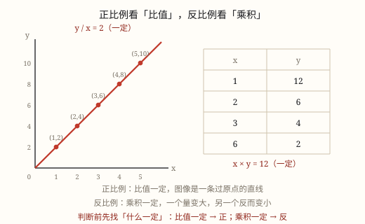

比的意义、化简与正反比例
两个数相除又叫两个数的比，比表示两个量的倍比关系而不是一个数；用比的基本性质可以把比化成最简整数比。
| 所属主题 | 比和比例 |
|---|---|
| 所属模块 | 数与代数 |
| 课标学段 | 第三学段（5~6年级） |
| 核心素养 | 符号意识运算能力模型意识推理意识 |
教材定位
人民教育出版社《2024年版》
对应六下第 1 单元「比和比例关系」：比的意义与比的化简。；对应六下第 1 单元「比和比例关系」：比例、正比例与反比例。
课标要求
| 数与代数·数量关系 | 在实际情境中理解比和比例以及按比例分配的含义，能解决简单的问题。 印刷第 24 页 行为动词：理解 |
|---|---|
| 数与代数·数量关系 | 通过具体情境，认识成正比的量（如 y/x＝5）（例20）；能探索规律或变化趋势（如 y＝5x）（例21）。 印刷第 24 页 行为动词：了解 |
说明
一杯奶茶好不好喝，关键在茶和奶各放多少。如果每次都是「3 杯红茶配 1 杯牛奶」，那么这个「3 对 1」就是这杯奶茶的配方密码——不管做一小杯还是做一大锅，只要守住这个关系，味道就一样。数学里专门用一个工具记录这种「几倍」的关系，它叫比。
两个数相除，又叫两个数的比。3 ÷ 1 可以写作 3 : 1，读作「3 比 1」。中间的「:」叫比号，它就是除号的另一种写法。比号前面的数叫前项（这里是 3），后面的数叫后项（这里是 1）。用前项除以后项，得到的商叫比值，3 ÷ 1 = 3，所以这个比的比值是 3。
这里有一个特别容易混的地方：比表示的是两个量的倍比关系，它不是一个数。3 : 1 这一对数字说的是「茶是奶的 3 倍」这件事；而比值 3 才是一个数。所以问「比值是多少」要答一个数，问「比是多少」要答成 3 : 1 的样子。
比和除法、分数是同一件事的三种写法：a : b = a ÷ b = a/b。后项相当于除数、分母，所以后项不能是 0。
比还有一个很好用的性质——比的基本性质：比的前项和后项同时乘或除以相同的数（0 除外），比值不变。12 : 18 的前后项都除以 6，变成 2 : 3，比值都是 2/3。利用它可以把比化简：前后项都是整数、并且只有公因数 1 的比，叫最简整数比。
（比例与正比例、反比例）
先说比例。如果两个比的比值相等，用等号把它们连起来，这个式子就叫比例。奶茶配方里「茶 : 奶」是 3 : 1，做双份时是 6 : 2，两个比的比值都是 3，所以可以写成 3 : 1 = 6 : 2——这就是一个比例。
比例里有四个数，位置有讲究：两端的两项叫外项，中间的两项叫内项。在 3 : 1 = 6 : 2 里，外项是 3 和 2，内项是 1 和 6。
比例的基本性质：两个外项的积等于两个内项的积。3 × 2 = 6，1 × 6 = 6，果然相等。有了它，只要知道比例里的三项，就能求出第四项（解比例），也能用它判断两个比能不能组成比例。
再看两种「一起变化」的量。两种相关联的量，一种量变化，另一种量也跟着变化，这里有两种典型情况。第一种：比值一定。钢笔每支 8 元，买 2 支 16 元、买 5 支 40 元，总价与数量的比 16 : 2、40 : 5 都等于 8，也就是 y/x = k（k 一定），这样的两种量叫成正比例的量。
第二种：乘积一定。从家到学校 1200 米，走 100 米/分要 12 分，走 150 米/分要 8 分，100 × 12 = 1200、150 × 8 = 1200，也就是 xy = k（k 一定），这样的两种量叫成反比例的量。
判断正反比例的关键只有一句话：看这两个量的比值一定，还是乘积一定。 比值一定就是正比例，乘积一定就是反比例，两个都不是定值就不成比例。光看「一个变大另一个也变大」是远远不够的。
使用场景
饮食与配比：冲奶茶、调果汁、和面糊、兑消毒液，配方上写的「茶 : 奶 = 3 : 1」「原液 : 水 = 1 : 4」都是比，做多大量都按这个关系放大缩小。
校园生活：班里男生 18 人、女生 24 人，可以说男女生人数的比是 18 : 24，化简后是 3 : 4；几个兴趣小组的人数也能两两相比。
地图与模型：地图上的比例尺、模型飞机各部分的尺寸比，都是用比来描述的缩小关系。
购物消费：买两种水果花的钱的比、大包装和小包装的单价之比，也常常先用比来看一看。
体育比赛：记分牌上的 3 : 1 是比分，不是我们今天学的比，这一点后面还会专门说。
（比例与正比例、反比例）
购物消费：单价一定时，总价和数量成正比例；带的钱一定时，能买的千克数和单价成反比例。算「买多少合适」之前，先看清哪个量是固定的。
行程出行：速度一定，路程与时间成正比例；路程一定，速度与时间成反比例。高铁、骑车、步行都能用这套关系做估算。
工程建造：一条路的总长一定，每天修的米数与需要的天数成反比例；每天修的一样多时，修的长度与天数成正比例。
饮食与配比：配方放大缩小靠比例，3 : 1 = 12 : 4，做一大锅奶茶时茶和奶要同时放大 4 倍。
地图与模型：比例尺 1 : 500000 本身就是一个比，图上距离与实际距离的比值始终不变，所以图上距离和实际距离成正比例。
注意点
后项不能是 0。比号相当于除号，除以 0 没有意义，所以 5 : 0 这样写是不行的。
化简比和求比值是两件事。化简 12 : 18 得 2 : 3（结果还是一个比）；求比值得 2/3（约 0.67）（结果是一个数）。答完检查一下：你交上去的是「一对数」还是「一个数」？
化到最简才算完。12 : 18 化成 6 : 9 还没结束，6 和 9 还有公因数 3，要一直化到 2 : 3。
带单位要先统一。地图上 3 厘米表示实际 15 千米，写比时不能直接写 3 : 15，要先把 15 千米化成 1500000 厘米，得 3 : 1500000 = 1 : 500000。
前后项的顺序不能随便换。3 : 1 说的是「茶是奶的 3 倍」，换成 1 : 3 意思就整个反过来了。
（比例与正比例、反比例）
「一个变大另一个也变大」不等于正比例。正方形边长 2 厘米时面积 4 平方厘米，边长 4 厘米时面积 16 平方厘米，面积确实变大了，可是 4 ÷ 2 = 2、16 ÷ 4 = 4，比值不是定值，所以边长与面积不成正比例。
反比例要看乘积，不是看比值。判断时把每一组的两个量乘一下，看积是不是同一个数；去算比值就会判错。
内项、外项别找错位置。两端的是外项，中间的是内项。写成 3/1 = 6/2 这种形式时，交叉相乘的那两对就是外项和内项。
比例是两个比相等，比只是一个比。3 : 1 是比，3 : 1 = 6 : 2 才是比例。
带单位的量要先统一单位再列比例，厘米和千米不能直接写在同一个比例里。

图 1：比值一定画成直线，乘积一定写成表格
为什么是这样
算理推导
先看「倍」：茶水 3 杯、牛奶 1 杯，茶水是牛奶的 3 倍，用除法写就是 3 ÷ 1。这是二年级就学过的「一个数是另一个数的几倍」。
把除法换一种写法：3 ÷ 1 记作 3 : 1。比号「:」就是把除号的一横去掉、只留上下两点，所以比就是除法关系的另一种记录方式，并没有多出什么新运算。
再看这个商是什么：3 ÷ 1 = 3，这个 3 说的是「茶水是牛奶的 3 倍」，它是一句关于两个量关系的描述，本身是一个数——这就是比值。而 3 : 1 是把两个量并排摆出来，说明「谁跟谁在比、各是多少」，所以比是关系、不是数。
基本性质从哪里来：除法有商不变的规律，12 ÷ 18 前后都乘 2 得 24 ÷ 36，商不变。比就是除法，所以 12 : 18 的前后项同时乘 2 得 24 : 36，比值也不变；同时除以 6 得 2 : 3，比值还是 2/3。同乘同除、0 除外，道理完全一样。
（比例与正比例、反比例）
比例的本质是「两个商相等」：3 : 1 = 6 : 2 的意思是 3 ÷ 1 = 6 ÷ 2。
把等号两边都乘上两个后项的积 1 × 2：左边 3 ÷ 1 × 1 × 2 = 3 × 2，右边 6 ÷ 2 × 1 × 2 = 6 × 1。两边乘的是同一个数，仍然相等，于是 3 × 2 = 6 × 1，这正是「外项积 = 内项积」。
换一组数试试：2 : 5 = 4 : 10，外项积 2 × 10 = 20，内项积 5 × 4 = 20。这不是巧合，上面那一步对任何比例都成立。也正因为如此，解比例时可以把「内项积 = 外项积」当成一座桥，把比例改写成乘法算式再求未知数。
正比例为什么是「比值一定」：钢笔 8 元一支，总价/数量 = 单价 = 8。单价不变，所以随便取两组总价与数量，除出来都得到 8，任意两组都能配成一个比例。把每组画成点连起来，是一条从原点出发的直线——每多买 1 支就多 8 元，涨得一样快。
反比例为什么是「乘积一定」：路程 = 速度 × 时间，路程固定在 1200 米，那么速度乘时间永远是 1200。速度翻倍，时间就减半，一增一减刚好抵消，所以乘起来不变。
动手实验
抓 30 颗黄豆和 20 颗绿豆，写成比 30 : 20，比值是 1.5。现在把两堆都倒掉一半，剩下 15 颗和 10 颗，比变成 15 : 10，比值还是 1.5；再把两堆各添一倍变成 60 和 40，比值照样 1.5。数三次你会发现：只要两堆按同样的倍数增减，比值这个「几倍」的关系一点没变——这就是比的基本性质。 （比例与正比例、反比例） 做两张表。表一：以每分钟 60 米的速度走路，记录 1、2、3、4 分钟走的路程（60、120、180、240 米），逐组算 路程/时间，都是 60——比值一定，正比例。表二：用 24 个小正方形摆长方形，记录长 1、2、3、4 时对应的宽（24、12、8、6），逐组算长乘宽，都是 24——乘积一定，反比例。把两张表并排贴在墙上，一眼就能看出区别：一张是「除出来一样」，一张是「乘起来一样」。
按场景的例题
例 1（场景：饮食与配比） 按配方调一杯奶茶
配方是红茶与牛奶的比 3 : 1。小敏用了 240 毫升红茶和 80 毫升牛奶，写出红茶与牛奶的比并化成最简整数比，再求比值。
解：先写比：240 : 80。前后项同时除以 80，得 3 : 1；3 和 1 只有公因数 1，已经最简。比值 = 240 ÷ 80 = 3。
答：最简比是 3 : 1，比值是 3（说明红茶是牛奶的 3 倍）。
例 2（场景：校园生活） 统计班级男女生人数
六(2)班男生 18 人、女生 24 人。男生与女生人数的比是多少？女生与全班人数的比是多少？
解：男生 : 女生 = 18 : 24，同时除以 6 得 3 : 4。全班 18 + 24 = 42 人，女生 : 全班 = 24 : 42，同时除以 6 得 4 : 7。
答：男生与女生 3 : 4；女生与全班 4 : 7。
例 3（场景：计量与估算） 浓缩果汁兑水
一瓶浓缩果汁的说明上写着「原液与水的比是 1 : 4」。小华倒了 150 毫升原液，要加多少毫升水？
解：原液 : 水 = 1 : 4，说明水是原液的 4 倍，150 × 4 = 600。
答：要加 600 毫升水。
例 4（场景：行程出行） 看地图算距离比
地图上两个地铁站相距 3 厘米，实际相距 15 千米。写出图上距离与实际距离的比，化成最简整数比。
解：先统一单位：15\text千米 = 1500000\text厘米。3 : 1500000，前后项同时除以 3，得 1 : 500000。
答：1 : 500000，也就是图上 1 厘米表示实际 5 千米。
例 5（场景：家庭与年龄） 按配方放大做一锅奶茶
配方是茶 : 奶 = 3 : 1。要做一大锅，已经放了 12 杯茶，该放几杯奶？用比例的知识算。
解：设该放 x 杯奶，列比例 3 : 1 = 12 : x。外项积等于内项积：3x = 1 × 12，x = 4。
答：该放 4 杯奶。
例 6（场景：购物消费） 匀速行驶的大巴
一辆大巴以 80 千米/时匀速行驶。(1) 行驶的路程与时间成什么比例？(2) 如果全程 240 千米，那么速度与时间成什么比例？
解：(1) 速度一定，路程/时间 = 80，比值一定，成正比例。(2) 全程固定，速度 × 时间 = 240，乘积一定，成反比例。
答：路程与时间成正比例；速度与时间成反比例。
例 7（场景：农业生产） 买苹果时的两种关系
苹果 6 元/千克。(1) 买 2 千克、5 千克时，总价与质量成什么比例？(2) 如果只带了 30 元，买的千克数与单价成什么比例？
解：(1) 总价/质量 = 6，比值一定，成正比例。(2) 单价 × 千克数 = 30，乘积一定，成反比例。
答：(1) 成正比例；(2) 成反比例。
例 8（场景：工程建造） 修一条 1200 米的路
(1) 每天修 100 米要 12 天，每天修 150 米要 8 天，每天修的米数与天数成什么比例？(2) 如果每天修 120 米，需要多少天？
解：(1) 100 × 12 = 1200，150 × 8 = 1200，乘积一定，成反比例。(2) 1200 ÷ 120 = 10 天。
答：(1) 成反比例；(2) 需要 10 天。
常用推论
比、除法、分数三者相通：a : b = a ÷ b = a/b（b ≠q 0），后项相当于除数、分母，所以后项不能为 0。
由比的基本性质（前后项同乘或同除以相同的数，0 除外，比值不变），任何比都能化成最简整数比。
已知比和其中一项可以求另一项：后项 = 前项 ÷ 比值；前项 = 后项 × 比值。
按比例分配：某份 = 总量 × 该份占比，比如把 40 本本子按 3 : 5 分给两个班。
比例的基本性质：两个外项的积等于两个内项的积；已知其中三项可以求第四项（解比例）。
正比例：y/x = k（k 一定），如单价一定时 总价/数量 = 单价。
反比例：xy = k（k 一定），如路程一定时 速度 × 时间 = 路程。
比例尺：图上距离 : 实际距离 = 比例尺，图上距离与实际距离成正比例。
按比例分配：某份 = 总量 × 该份占比。
易错点
错把 12 : 18 化简成 6 : 9 就交卷了。
为什么错6 和 9 还有公因数 3，没化到最简。化简比要一直化到前后项只有公因数 1。
正确12 : 18 = 2 : 3。
错问「3 : 1 的比值是多少」，答「3 : 1」。
为什么错比值是前项除以后项的商，是一个数，不该带比号。
正确比值是 3。
错把比赛比分 2 : 0 化简成 1 : 0，还说它的比值是 2。
为什么错比分记录的是双方各得多少分，两个数之间没有相除的关系，不能化简，也没有比值。
正确2 : 0 只是一个比分，原样记录，不要动它。
错地图上 3 厘米表示 15 千米，写成 3 : 15 = 1 : 5。
为什么错3 厘米和 15 千米单位不同，直接相比等于拿厘米去和千米对除。
正确先化成同单位：3 : 1500000 = 1 : 500000。
错因为正方形边长越长面积越大，所以边长和面积成正比例。
为什么错正比例要求比值一定。4 ÷ 2 = 2、16 ÷ 4 = 4、36 ÷ 6 = 6，比值一直在变，只是「一起变大」而已。
正确边长与面积不成正比例。
错在 3 : 1 = 6 : 2 里，把 3 和 6 当成内项。
为什么错内项是中间的两项，外项是两端的两项。位置搞反，内项积和外项积就对不上了。
正确外项是 3 和 2，内项是 1 和 6，3 × 2 = 1 × 6。
错判断「每天修的米数」与「天数」是否成反比例时，去算 100 ÷ 12 和 150 ÷ 8 是否相等。
为什么错反比例看的是乘积一定，除出来相等那是在判断正比例。
正确算 100 × 12 与 150 × 8，都等于 1200，乘积一定，所以成反比例。
错地图上 3 厘米对应实际 15 千米，直接列 3 : 15 = x : 30。
为什么错两个距离单位不同，同一个比例里必须用同一种单位。
正确先把 15 千米化成 1500000 厘米，得到比例尺 1 : 500000，再列式。
直观理解
比像食品包装背面的「配方卡」：上面印着「3 份茶、1 份奶」，你按它做一杯还是做一锅都行，只要两份按同样倍数加，味道不变——这张卡记录的是关系，不是分量。比值则是你尝一口后能说出的那句话：「茶是奶的 3 倍」，那是一个数。 （比例与正比例、反比例） 比例像食谱上的「放大键」：原配方 3 份茶配 1 份奶，按 2 倍放大就是 6 份茶配 2 份奶，两边放大的倍数一样，味道就不变。正比例像自动扶梯，每秒升一样高，时间翻倍高度也翻倍；反比例像分一块固定大小的蛋糕，人越多每人分到的越少，人数乘每份永远是那块蛋糕。
比是关系不是数，前项后项要记住；同乘同除值不变，化到互质才算数。 （比例与正比例、反比例） 比值一定正比例，乘积一定反比例；内项外项交叉乘，两边相等成比例。